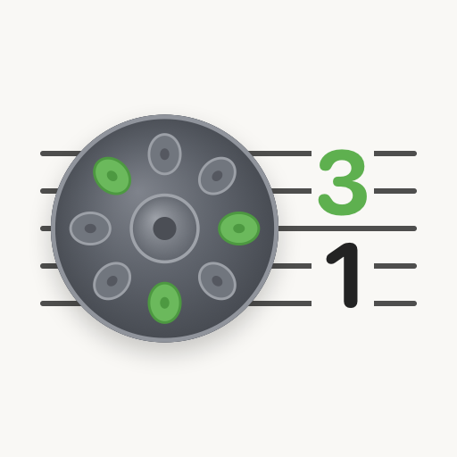
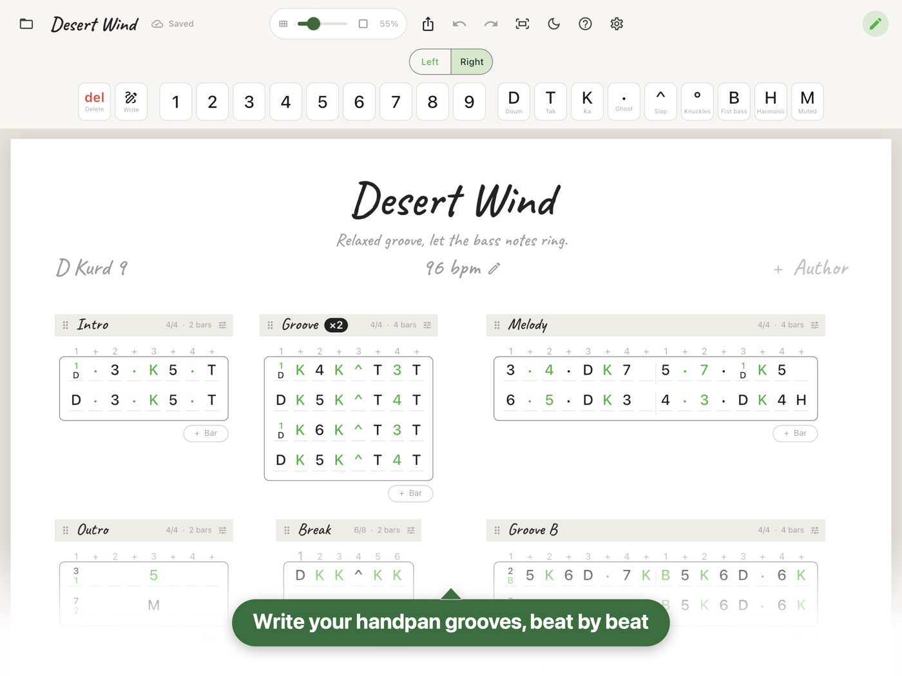

Handpan Sheet Music
Write handpan notation on your iPad.

- Tone fields and techniquesNumbers for the tone fields; doum, tak, ka, ghost notes, slaps, knuckles, fist bass, harmonics and muted notes — or your own symbols.
- Two hands, two coloursBlack for the right hand, green for the left. Stack notes in one slot for chords.
- Write with the Apple PencilWrite numbers and symbols right on the bars; they turn into notes, and it learns your handwriting.
- SectionsNamed sections with their own time signature, slots per count and number of bars. Repeat, duplicate and reorder them.
- Play modeHide the tools and lock the sheet while you play along.
- Your files, shared your waySheets save by themselves as files in the Files app. Share them, or export a clean PDF to print.